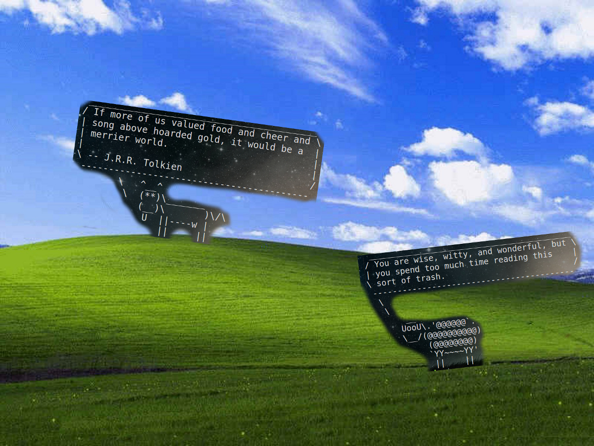
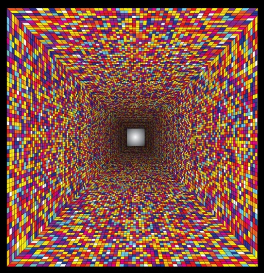
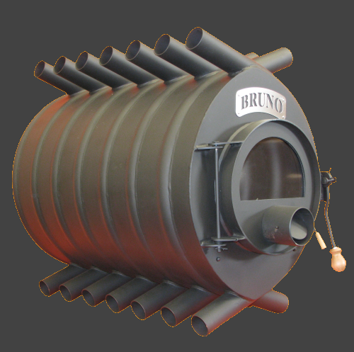
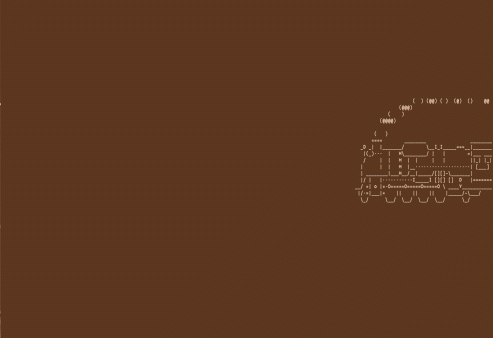

Enter the void
J’ai profité des derniers jours de la prairie pour participer à mon premier projet made in simplon avec une petite équipe de recrues. Derniers instants de papillonage avant d’attaquer les choses sérieuses.
La prairie c’est fini
 Dernières roulades insouciantes dans l’herbe grasse
Le coup de sifflet du grand départ a rettentit sous la verrière de Simplon, un certain lundi matin de la semaine 42. Frédéric commence par poser le cadre des semaines à venir avec une présentation courte et énergique devant micros et caméras.
Ze shell
Sur les tables ces bon vieux T6O nous attendent le disque vierge (jusqu’au MBR) de tout système d’exploitation. Andrei passe dans les rangs pour distribuer les copies - non pas du règlement intérieur mais - du CD d’installation d’Arch Linux.
Même si j’utilise des distributions GNU/Linux depuis quelques années, c’est la première fois que j’installais une distribution 100% via la ligne de commande :)
Pas de doute, je me souviendrai de cette entrée en matière!
Sueur et tremblements
 Aller viens! on est bien!
Bien que très puissante, la philosophie d’unix s’avère déroutante quand depuis tout jeune dialoguer avec l’ordinateur consiste essentiellement à cliquer sur des boutons. Les premiers jours à la ligne de commande dans les entrailles du système n’ont pas été faciles pour tout le monde. Les plus novices d’entre nous se sont vite sentis abandonnés entre le partitionnement du disque, la création du système de fichier, l’installation du système de base… what the chr00t!!?
Tous à poêle!
 )°( Burning Bruno )°(
Heureusement il y a Bruno : le poêle à bois! Il a la fonte ardente et l’écoute attentive. Tous les matins le cercle se forme autour de lui pour une réunion debout ; stand up meeting comme on dit dans le milieu. Chacun à 45 secondes pour s’exprime selon trois règles simples:
- Qu’est-ce que j’ai fait hier?
- Quelles sont mes difficultées, les points bloquants, les bugs de l’organisation, …?
- Ce que je prévois de faire aujourd’hui.
Entre l’enthousiasme des uns, le découragement des autres, le coup de geule voire la déclaration d’amour collective…Bruno a le chic pour me mettre de la joie au coeur.
La vie de couple
Tout ce que je fais, on le fais à deux. Chaque binôme a une machine (on a baptisé la notre hal-9000), un écran et deux claviers. La souris est supperflue dans l’environnement graphique d’Xmonad. Apprendre à deux c’est un petit challenge au début mais on y prend vite goût. Premier réflexe à aquérir : poser des question quand on ne comprend pas!
Ce qui est vraiment appréciable c’est qu’en plus d’apprendre ce que je savais ne pas savoir, j’apprend ce que mon binôme ne sait pas et que je ne pensais pas ne pas savoir ;)
Oui, l’entraide est dans l’ADN des simplonnien(ne)s et ça se vérifie tous les jours.

La machine est lancée, on ajuste la pression, on graisse par-ci par-là pour fluidifier la mécanique du groupe. Mon Papa dit toujours que “la graisse c’est l’âme de la mécanique”, à Simplon notre âme on l’invente tous les jours avec chacune des petites décisions qui nous permet d’avancer.
~ E.